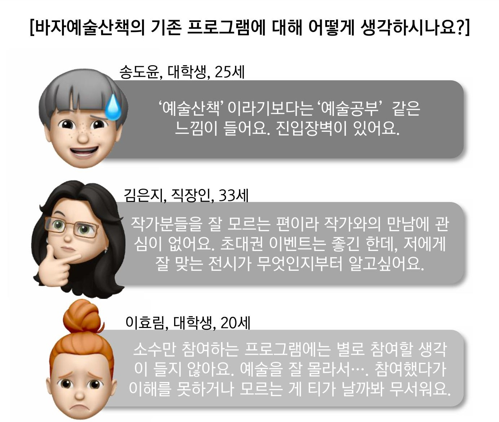
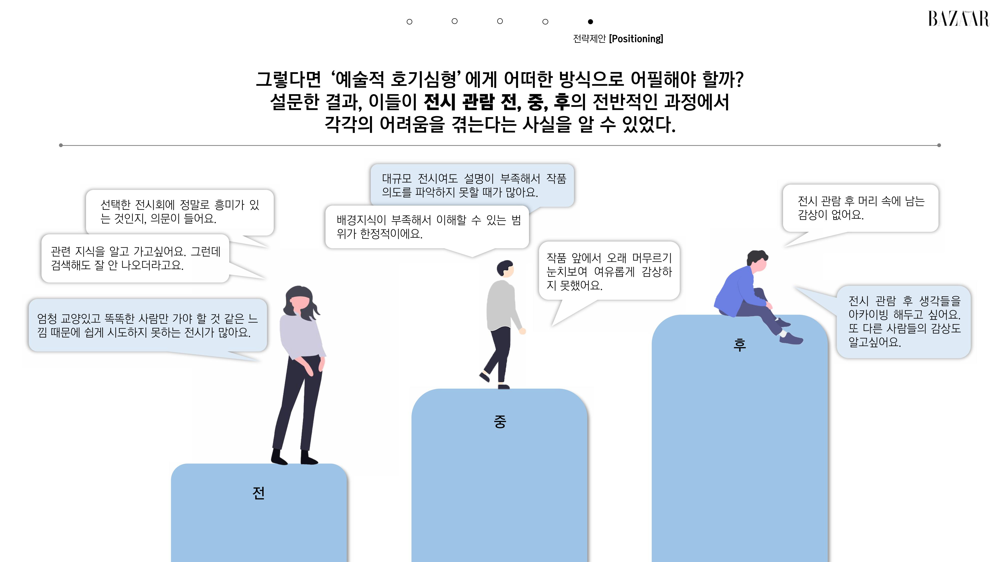
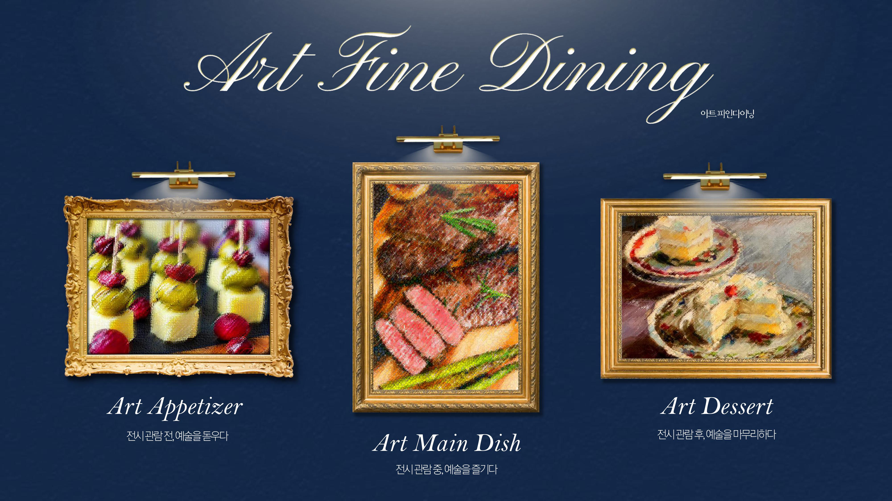
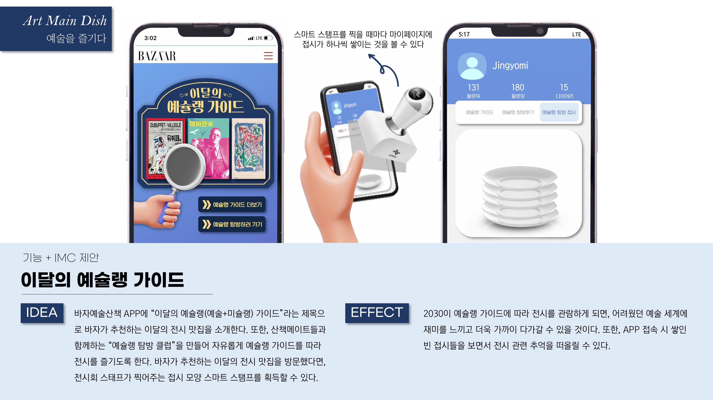
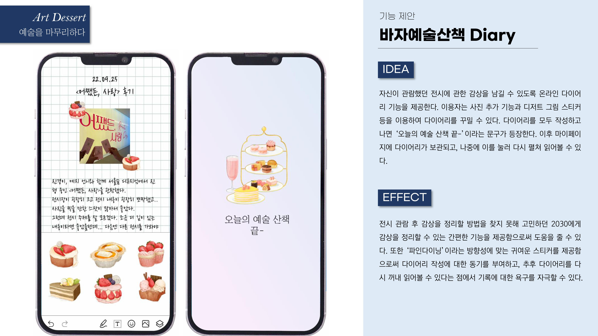
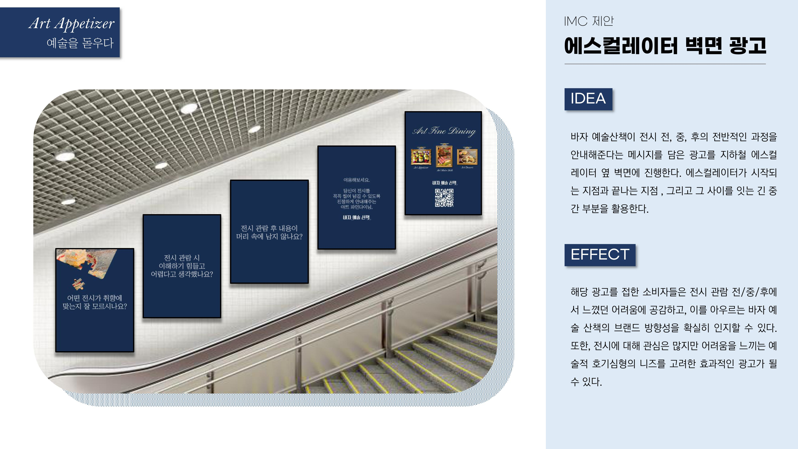
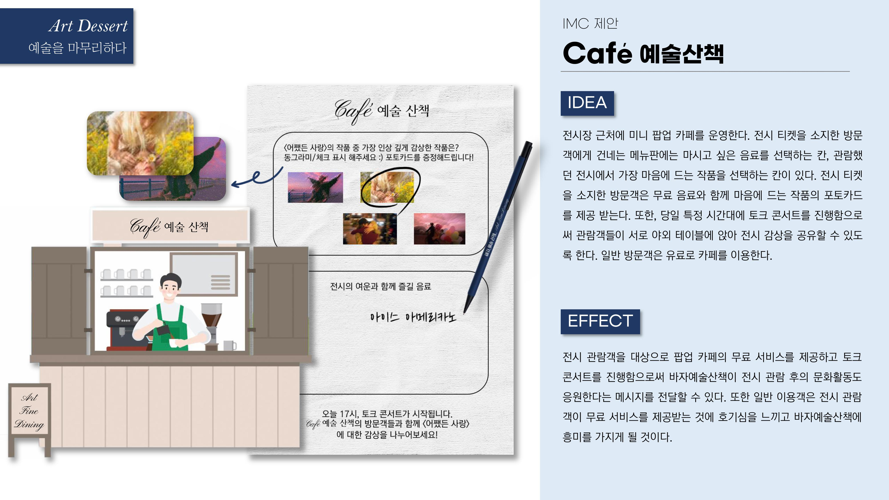

HARPER'S BAZAAR 산학협력 최우수상 🏆
94명 설문과 10명 FGI를 통해 예술에는 관심이 있지만 배경지식 부족으로 진입장벽을 느끼는 고객을 발견했습니다. 전시를 고르는 순간부터 관람하고 기록하는 순간까지의 불편을 구조화하고, 이를 파인다이닝 코스처럼 안내하는 'Art Fine Dining' 컨셉과 서비스 기능으로 확장했습니다.
Problem & Target
바자예술산책은 "산책하듯 가볍게 예술을 즐기도록 돕는다"는 브랜드 방향을 가지고 있었습니다.
하지만 FGI에서는 다음과 같은 반응이 나왔습니다.

브랜드가 말하는 '가벼운 예술 경험'과 실제 고객이 느끼는 경험 사이의 차이로 문제를 정의했습니다.
Customer Journey

전시를 고르는 순간부터 감상을 남기는 순간까지 안내해주는 서비스가 필요합니다.
Core Concept
예술 초보에게는 친절해야 하고, Harper's BAZAAR의 세련된 이미지는 유지해야 했습니다.
파인다이닝은 고객이 미리 공부하지 않아도 코스를 따라 경험할 수 있습니다. 이를 전시 여정과 연결했습니다.

좋은 레스토랑이 코스를 안내하듯, 예술 경험도 친절하게 안내합니다.
Service Design
대표 기능 01
예슐랭 가이드 + Smart Stamp
전시 추천을 실제 관람과 다시 앱으로 돌아오는 행동까지 연결했습니다.
바자가 추천하는 전시를 '전시 맛집'처럼 소개하는 예슐랭 가이드를 제안했습니다.

대표 기능 02
BAZAAR Art Diary
관람 후 사라지는 감상을 기록으로 남기도록 설계했습니다.
관람 사진, 짧은 감상, 스티커로 꾸미는 관람 → 감상 → 기록으로 이어지는 After Experience를 완성했습니다.

Output & Result


세부 IMC 실행안은 팀원들과 공동으로 발전시켰습니다.
성과
내 역할